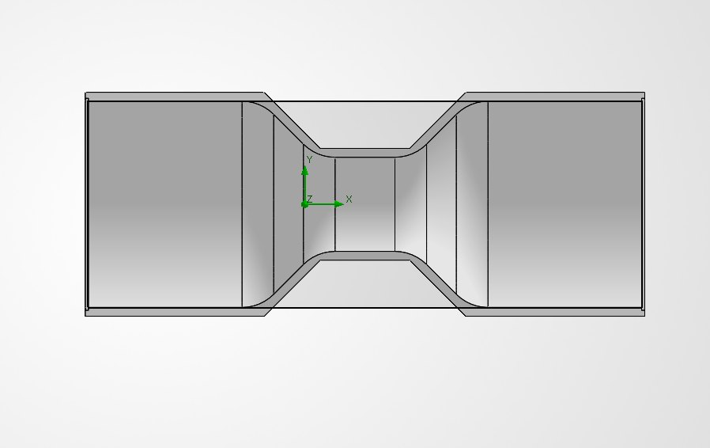
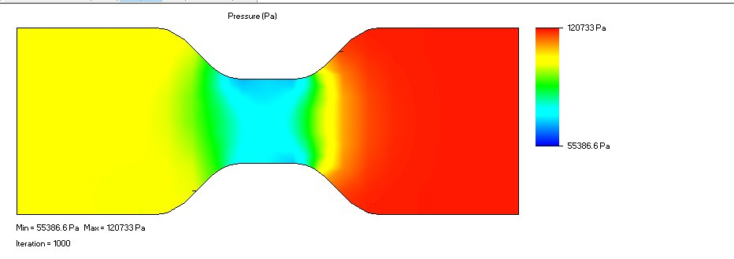
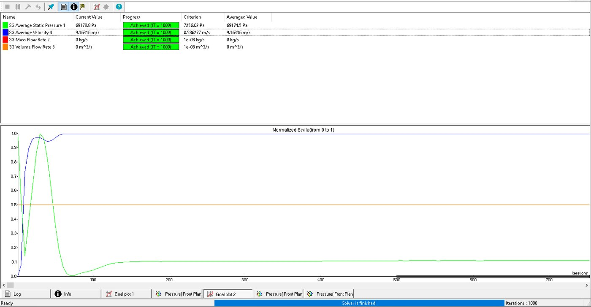

Project
A validation study checking a textbook hand calculation against a CFD simulation. I modelled a Venturi meter from the given dimensions, ran the flow in SOLIDWORKS Flow Simulation, and compared the throat pressure against the Bernoulli result — the two agreed to within 3.1%.
01 · MODEL

I built the CAD model to match the geometry and flow conditions I was given for the exercise. The Venturi was created as a revolved solid with a 50 mm inlet and outlet bore narrowing to a 25 mm throat (inlet radius 25 mm, throat radius 12.5 mm) — a faithful model of the specified part, set up so the simulation would see exactly the case the hand calculation described. The working fluid was water at 20 °C, with a 2 m/s inlet velocity and the outlet held at atmospheric pressure.
02 · HAND CALCULATION
Before simulating, I worked the answer out analytically. By continuity, the throat velocity is the inlet velocity scaled by the area ratio — (50/25)² = 4, so 2 m/s becomes 8 m/s at the throat. Bernoulli then gives the pressure drop: ΔP = ½ρ(V₂² − V₁²) = ½ × 998 × (8² − 2²) ≈ 29,940 Pa, for a predicted throat static pressure of about 71,385 Pa. The inlet Reynolds number works out to roughly 99,800, confirming the flow is turbulent and that the turbulent solver setting was the right choice.
03 · SIMULATION


I then ran the same case in SOLIDWORKS Flow Simulation. The pressure cut plot shows exactly the expected behaviour — pressure dropping to its minimum at the throat as the flow accelerates, then recovering in the diffuser downstream. I tracked the throat pressure and velocity as solver goals and let the run converge before reading the averaged values.
04 · RESULTS
| Quantity | Hand calc | CFD | Difference |
|---|---|---|---|
| Throat static pressure | 71,385 Pa | 69,175 Pa | 3.1% |
| Throat velocity | 8.0 m/s | 8.0 m/s | 0.0% |
The simulated throat pressure landed within 3.1% of the hand calculation, and the throat velocity matched exactly at 8 m/s — comfortably inside the 5% band normally treated as agreement for this kind of check. The small gap is physically meaningful rather than an error: the CFD reads a slightly larger pressure drop because it captures viscous wall friction and the non-uniform velocity profile that the ideal Bernoulli equation ignores. An exact match would actually have been suspicious. The study validates both the manual working and the simulation setup, and the direction and size of the discrepancy give extra confidence the model is behaving correctly rather than agreeing by coincidence.